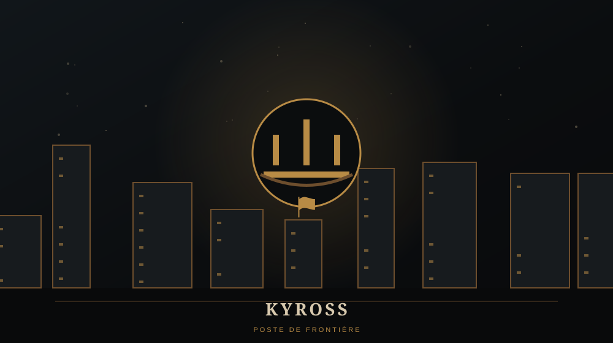

WARCRAFT / LIEUX / WARCRAFT I
KYROSS
Avant-poste de la Horde dans les marais

TYPEAvant-poste orc
RÉGIONSwamps of Sorrow
CAMPAGNEHumaine
MISSIONChapitre III
🏕️ QU'EST-CE QUE KYROSS ?
Kyross est un avant-poste de la Horde dissimulé dans les Swamps of Sorrow. Après les combats autour de Grand Hamlet, les Humains décident de ne plus seulement attendre les attaques : ils cherchent désormais à frapper les Orcs sur leur propre terrain.
⚔️ DANS NOTRE CAMPAGNE
La troisième mission humaine consiste à localiser puis détruire cette implantation. Le déplacement vers les marais élargit pour la première fois notre vision géographique de la guerre.
⚠️ LORE ULTÉRIEUR / SPOILERS
Les Swamps of Sorrow resteront durablement associés à la présence orque et à la proximité de la Porte des ténèbres.
💡 LE SAVAIS-TU ?
← RETOUR AU CODEX WARCRAFTKyross illustre bien les nombreux noms de lieux introduits dès Warcraft I, parfois beaucoup moins connus aujourd'hui que Stormwind ou Westfall.